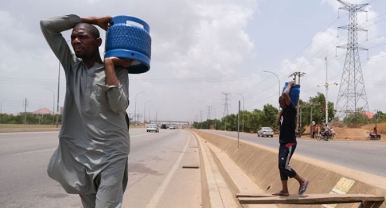

Senate Decries Inadequate LPG Supply, Considers Price Reduction

The Senate Committee on Gas Resources has raised concerns that insufficient supplies of liquefied petroleum gas (LPG) to the domestic market could frustrate efforts to reduce cooking-gas costs for Nigerians. Committee chairman Senator Jarigbe Jarigbe made the remarks during a meeting with gas-sector stakeholders focused on export revenue remittances and local supply.
Jarigbe said the supply situation ran counter to the aims of Presidential Executive Order 9, issued by President Bola Tinubu on February 13, 2026. He said the order was intended to support adequate domestic LPG availability, improve revenue remittances and bring down gas prices. The senator stressed that more product must reach the local market to ease the financial pressure on households.
The committee plans to continue discussions with industry participants, including Chevron, the Nigerian Upstream Petroleum Regulatory Commission and the Nigerian National Petroleum Company Limited. Jarigbe said the engagement would focus on securing adequate domestic supply and achieving the intended reduction in prices.
Enorense Amadasu, representing the regulatory commission, said the offshore facility was initially designed around export evacuation arrangements for both the Nigerian side and Chevron under their joint venture. He cited infrastructure and logistical limitations as obstacles to moving offshore LPG into the domestic market. The committee is expected to meet relevant stakeholders again next Tuesday to address supply gaps, improve export revenue remittances and increase LPG availability in Nigeria.
Source: Channels TV